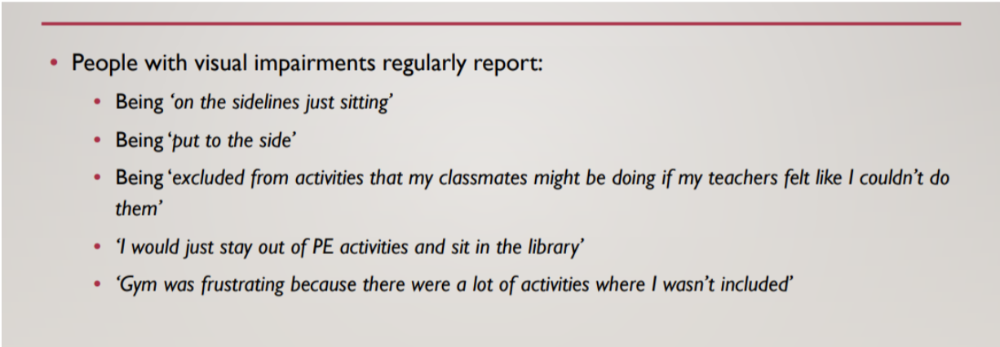

THE PROBLEM
Physical Education in schools has traditionally been inaccessible, especially towards students with visual
impairments. For the project, our prompt was to devise technological interventions enabling Visually Impaired
Children to better perform P.E. in their existing ecosystem.

THE SOLUTION
Our proposed solution has two parts, a voice user interface embedded headset and a tablet interface. The VUI is the student-facing aspect, giving them spatial information about their surroundings. The tablet interface acts as a monitoring tool to facilitate the teacher's tasks.
THE IMPACT
The testing of our solution provided us with overwhelmingly positive feedback. The concept works within the constraints of the existing ecosystem of P.E. and hence has the potential for impact without causing disruption. The technological feasibility, however, is a concern.
DURATION
August 2019 - December 2019
TEAM
Aditya Kundu
Jae Hyuk Kim
Hyun Tae Park
Ruchita Parmar
Arpit Mathur
ROLE
Involved in the planning and execution of every design and research method employed in the project. Specifically took lead on the design and development of the voice user interface, and the testing phase of the project.